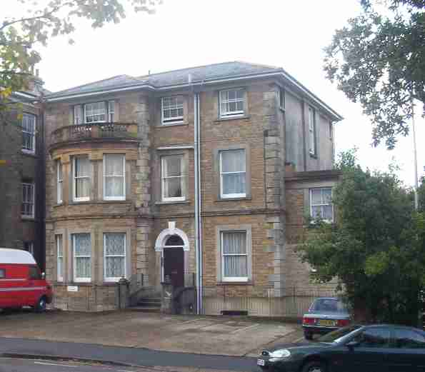

Here's a series of thumbnail sketches of where I've lived. the further down the page you go, the older. See?
2003- : Ryde, Isle of WightFinding myself newly separated I was bound to seek a flat in true Weekend Dad style. Luckily I located one that had a number of favourable features. It's in the delightful resort of Ryde, close to the extensive amenities that town offers, and is the basement flat of a large Victorian 4-storey block of flats. |
 |
It has panoramic views... of dustbins. There's room for the boys to doss down from time to time which they eagerly do. It's not the lightest place in the world, nor the largest, but it's mine (so long as I pay the rent). If you want more detail, come and see me.
I lived in an Edwardian house in a quiet street in Lake, which is between the seaside resorts of Sandown and Shanklin on the Isle of Wight. I grew up in Sandown and the house is not far from my old house.
The house has a living-room and a knocked-through kitchen, which forms the main living space. Everything goes on in there. In the front there is a room surprisingly enough called the front room. Jack called it the front bedroom, for reasons he refuses to explain. In there was the TV and loads of books: since I moved out Babs now uses it as a studio.
Upstairs there are three bedrooms and a minute bathroom. There is a small but very fine garden, which served not only as my country estate but also as football pitch, cricket wicket, campsite, outdoor laboratory, cycletrack, dining room, cats toilet and just about everything else.
We lived in a Victorian terraced house down a quiet street in Southend-on-Sea. The area was apparently cheap to buy in because it was near the red light district, but we didn't make a penny. A few minutes walk away was Southend Pier, the longest pleasure pier in the world. And very pleasurable it is, too. The sea itself was any time between 15 minutes and 45 minutes walk, depending on the tide.
We had a big knocked-through room in the front, where we lounged about and the TV, computer, toybox etc lived. Behind this is what we laughably called the morning room. The only reason for this is that, having read too many estate agents blurbs, we got in the habit of calling downstairs rooms with no other apparent function a morning room. Why do estate agents call such rooms morning rooms? I do not know. Do you? Behind that splendid room was the kitchen, which was not too bad. It was certainly the biggest kitchen we had ever had at the time. It would probably have been possible to swing a cat in it, and indeed, I was several times tempted to do this. Out the back was a lovely little garden. The great thing was, we could do the gardening in about 5 minutes. This was better than the Warden's House, Wicken, where we used to live. There it took three days just to cut the hedges. It also meant that at long last, I now owned a tree. Yes, a tree. In fact several little ones. Upstairs we had a big front room for me and Babs, another room for Jack the Lad, one for Bill the boy, and a bathroom. You know the sort of thing. The great thing about this house was that upstairs again there was an attic room where Babs keeps her art stuff, and retreated to gaze at the sky out of the skylights. A garret or ivory tower, maybe.
Fairly near to us was Southend Central railway station, so people could come to visit us by train very easily. Just before that was Southend central shops. You could buy things there. Between us and the sea was about 10 minutes walk through grotty seaside avenues, down to the brash, vulgar glitzy promenade where you really could buy kiss-me-quick hats and eat pie and mash. There was a super funfair with all sorts of rides and vile hotdogs on which you could squeeze brown, red and yellow stuff. I love all this stuff to this day, but Babs was always less sure about it.
If you strayed a little further you could reach Westcliff, which was much more civilised. You could visit the Bandstand, where every afternoon an old chap still plays ballroom dance music on an old organ (no sniggering, at the back) and couples so old they can hardly walk are seen gliding around the little dancefloor with an extraordinary grace. Some of the old boys wear their medals, and the ladies dress up. Its a real sight to see. We loved it. When I am that old, I wonder, will I be able to dance like that? I do hope so.
That's my house/s. What about yours? If you send me some facts about where you live, or even a link, I can put it here! Yes, right here. Go on, what are you waiting for??
Here is a submission from Mary Hansen:
Hello. I live in a big, square, Prairie-Gothic farmhouse in the SW corner
of Wisconsin. The house and farm are 3 miles south of Viola a town the same size as
Wicken. As with your situation, we have to travel 15 miles to do most types of shopping.
The house and farm are in the Kickapoo Valley which is named after an Indian tribe that
never lived here.( DIGRESSION - The Kickapoo Tribe still exists in two parts. One group
has their own reservation in Oklahoma and is served with a Quaker church. The other group
spends half the year in Mexico and the other half camped in the flood plain of the Rio
Grande beneath a K-Mart Department Store on the Texas side. A city water spigot is
provided them.) The Kickapoo Valley has a 1/2 mile wide floodplain and is walled by steep
450' slopes covered with maple woods. On summer mornings we have heavy fogs allowing
certain plant species to survive here since the last ice age that otherwise exist only
hundreds of miles to the north. The glaciers went completely around the Kickapoo Valley in
that last ice age. My wife grew up in California, I in Detroit. We moved here 20 years ago
without a job and not knowing anyone here. When she wrote her parents a letter to tell
them where we had wound up, her father replied that his father was from the Kickapoo
Valley and so were three generations before him. This is 2000 miles from California. A
wonder-ful coincidence.
THE HOUSE. Built in 1926 by Scotch immigrants of a mid-west design. 28'x28',two floors, basement of fieldstone walls, and a duck your head attic. Full porch across the front nice to sit in if the mosquitoes aren't bad and a screened side porch. A pretty much remodelled kitchen-an ongoing project-lots of lights and a large window. Living room and dining room with oak floors which need refinishing. 4 bedrooms and a small "office" which is actually more of a place to hide clutter when company comes.
This is probably wordier than your request bode. [Certainly not! M] I enjoyed your home page.